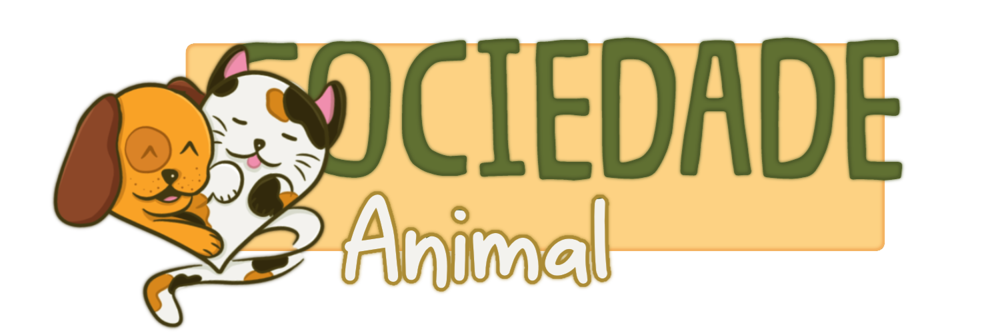

Uma iniciativa projeto Agrinho Colégio Estadual João de Faria Pioli

Quem somos nós?
Olá a todos, neste site reunimos diversas informações e intruções intuitivas e simples para que todos, desde as menores até as mais avançadas idades, possam entender a gravidade dessa situação e a cuidar, proteger e ajudar animais em situações de vulnerabilidade e desprezo.